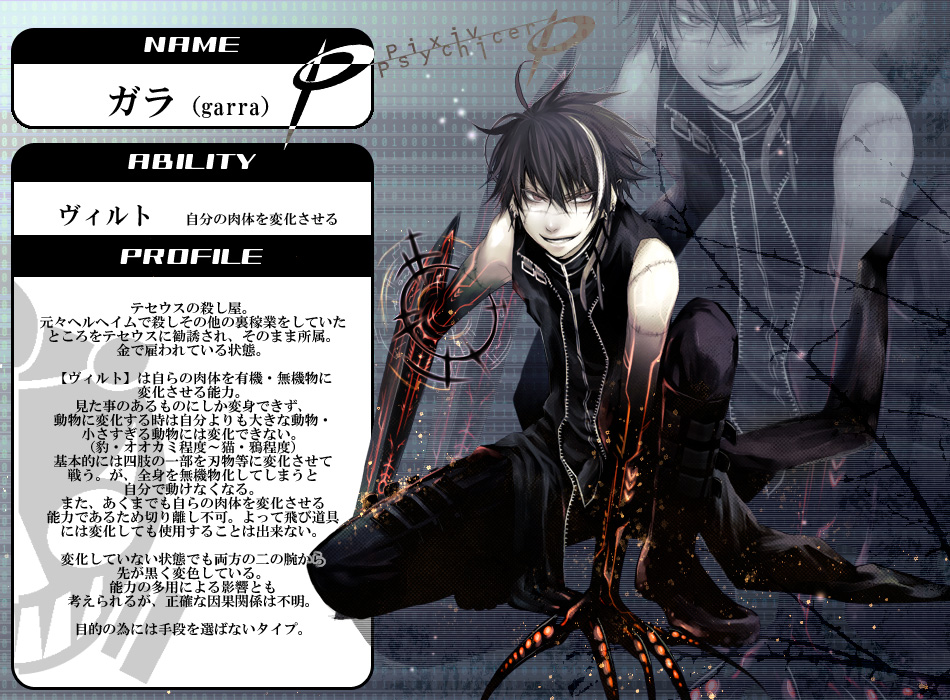
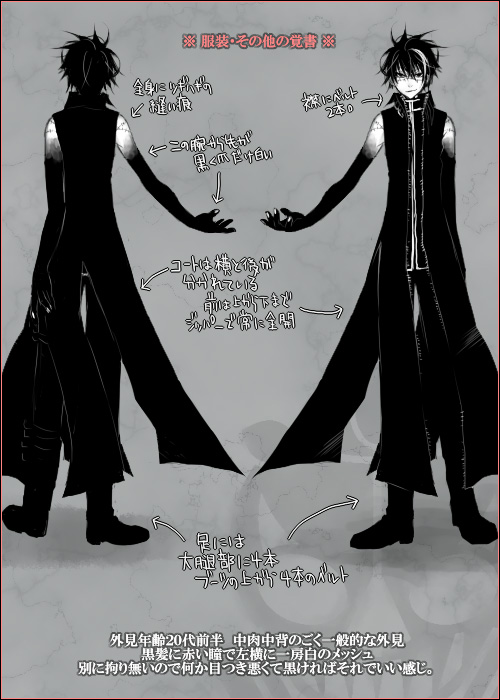
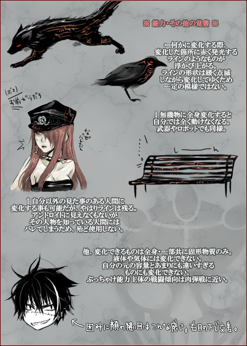
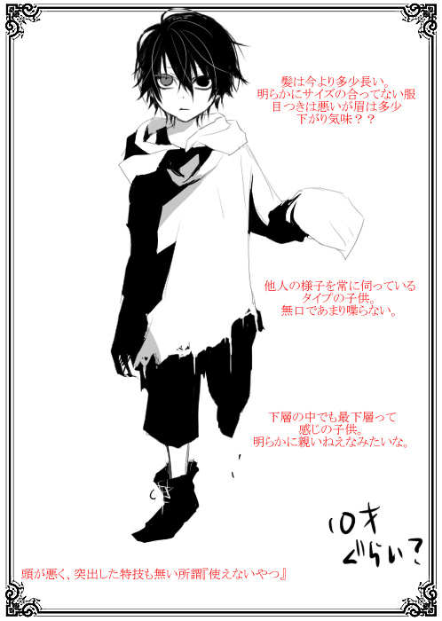

テセウスが有するもう一つの私兵部隊。
殺人、暗殺、不都合な組織に対する破壊工作など、非合法な措置を講じるために存在する。
元々は隊長の【ガラ】が個人で雇われていたところを、テセウス肥大化に伴って大規模化。
現在のフェンリルに至っているというのが組織としての経緯。
殺人、暗殺、不都合な組織に対する破壊工作など、非合法な措置を講じるために存在する。
元々は隊長の【ガラ】が個人で雇われていたところを、テセウス肥大化に伴って大規模化。
現在のフェンリルに至っているというのが組織としての経緯。
ラグナロク事件以前は表立って看板を掲げており、その苛烈極まる活動や隊員の粗暴さから恐れられていた。
が、テセウスの正規化に伴って表向きには解体を余儀なくされ、以降は地下に潜って活動している。
これは対外的な措置に限らず、テセウス内でも【フェンリル】の名は過去のものと考えている者は多い。
が、テセウスの正規化に伴って表向きには解体を余儀なくされ、以降は地下に潜って活動している。
これは対外的な措置に限らず、テセウス内でも【フェンリル】の名は過去のものと考えている者は多い。
性質上、表社会に露見しかねないような大規模任務は少なく、単独任務も多い。
そのためチーム編成はなく、グレイプニル同様「隊長」とされるのは一人のみ。
そのためチーム編成はなく、グレイプニル同様「隊長」とされるのは一人のみ。
公式サイト原文
ユグドラシルにおけるいわゆる「裏の仕事」を担う組織。
それは殺人であったり、暗殺であったり、
はたまたユグドラシルにとって都合の悪い組織を潰すといった役目を担っている。
ヘルとは違い非公式の組織であり、
部隊としては「存在していない」事になっている。
それは殺人であったり、暗殺であったり、
はたまたユグドラシルにとって都合の悪い組織を潰すといった役目を担っている。
ヘルとは違い非公式の組織であり、
部隊としては「存在していない」事になっている。
性質上大きく動くことは少なく、単独での任務も多い。
そのためチーム編成はなく、グレイプニル同様「隊長」とされるのは一人のみ。
その実力はグレイプニルに匹敵するとも言われている。
そのためチーム編成はなく、グレイプニル同様「隊長」とされるのは一人のみ。
その実力はグレイプニルに匹敵するとも言われている。
知る者にとってはグレイプニル以上に畏怖される存在。
又、柄の悪い面々が揃っているため上層からはすこぶる評判が悪い。
又、柄の悪い面々が揃っているため上層からはすこぶる評判が悪い。
- 性別
- 男性
- 年齢
- ２４歳
- 能力タイプ
- トランサー
- 異能名
- ヴィルト
- 一人称
- 俺
- 二人称
- お前、てめー
- 三人称
- あいつ
- ベース
- ぶっきらぼう、若者人間
-
その他
口癖等 -
セラフィーマのことを「パソコン」、
ソールのことを「ワン公」と呼んでいる。
どうやら相手に好き勝手なあだ名をつけるタイプらしい。
特殊部隊フェンリルの隊長。黒髪に顔を走る真一文字の傷と、ミュータント化によって黒く染まった四肢が特徴。
凄腕の殺し屋であったが、ラグナロク事件の終局でセントラルタワーへ特攻。
限界を超える能力の使用によって因子崩壊を起こし、そのまま死亡した。
――と思われていたが、実際はその一歩手前で踏みとどまり辛うじて生存したようだ。初対面の人物には大抵この事を驚かれる。
凄腕の殺し屋であったが、ラグナロク事件の終局でセントラルタワーへ特攻。
限界を超える能力の使用によって因子崩壊を起こし、そのまま死亡した。
――と思われていたが、実際はその一歩手前で踏みとどまり辛うじて生存したようだ。初対面の人物には大抵この事を驚かれる。
普段の振る舞いは陽気で軽薄な若者といった風だが、仕事においては冷徹。
相手が女子供であろうと全く容赦はせず、「暗殺対象の娘が目撃者となってしまったため、念のために殺す」という判断を取ったこともある。
なお、単独行動の方が気楽なようだが、いち部隊の隊長として作戦指揮自体はそれなりにできる。
相手が女子供であろうと全く容赦はせず、「暗殺対象の娘が目撃者となってしまったため、念のために殺す」という判断を取ったこともある。
なお、単独行動の方が気楽なようだが、いち部隊の隊長として作戦指揮自体はそれなりにできる。
異能【ヴィルト】は自らの肉体を有機物・無機物に関わらず変容させる。
変異には以下の条件がある。
変異には以下の条件がある。
①自らが目にしたものにしか変身できない。
②自身より大きな動物には変身できず、ネズミなどの小さすぎる動物にも変身できない。
③体の一部を切り離すことはできない。
④機能や性質は変身した対象に倣う。そのため、全身を無機物に変化させた場合、その間は動けなくなる。
⑤変身した姿には独自の文様が浮かび上がるため、変装には適さない。
②自身より大きな動物には変身できず、ネズミなどの小さすぎる動物にも変身できない。
③体の一部を切り離すことはできない。
④機能や性質は変身した対象に倣う。そのため、全身を無機物に変化させた場合、その間は動けなくなる。
⑤変身した姿には独自の文様が浮かび上がるため、変装には適さない。
制約上、異能の用途は専ら戦闘に限られる。
「あぁ？俺は自由にさせてもらうぜ」
「ハハハ、どんなに強ぇ奴も首を飛ばされちゃお終いだな」
「後はてめーが生き残るために必要な事だけをやれ。気合入れて生き延びろよ」
「通信機あろうとなかろうと、俺の邪魔するヤツは俺の敵だ。そこに何一つ変わりはねーさ」
「後はてめーが生き残るために必要な事だけをやれ。気合入れて生き延びろよ」
「通信機あろうとなかろうと、俺の邪魔するヤツは俺の敵だ。そこに何一つ変わりはねーさ」
死亡疑惑について
「……これだから嫌なんだ、組織ってのは。こんなに深く入り込むつもり、なかったってのによ」
実はピクサイにおいては死亡している可能性が極めて高いキャラクター。
当時のガラはミュータント化が進行しており、最終決戦出撃時はセラに「もーココには戻ってこねぇから」と一方的に告げている。
その他にも彼の死を想起させる描写が多く、TRPG版のガラは「実は生きていた」という扱いなのだと思われる。
当時のガラはミュータント化が進行しており、最終決戦出撃時はセラに「もーココには戻ってこねぇから」と一方的に告げている。
その他にも彼の死を想起させる描写が多く、TRPG版のガラは「実は生きていた」という扱いなのだと思われる。
ガラは元々ストリートチルドレンであり、任務遂行のために手段を選ばないのは劣悪な環境で糧を得るため。
「生き残ること」だけを自らに課し、それ以外を考えるのは下層を生きる上で不必要かつ不合理と自らを戒めていたようだ。
が、ピクサイⅠで最後に描かれたガラのイラストは、「もはや割に合わない、この戦いから降りる」というセラへの言葉と裏腹に、
仲間との思い出を回想し、何故自分が戦い続けるのかを自問しながらセントラルタワーへ突撃するシーンだった。
「生き残ること」だけを自らに課し、それ以外を考えるのは下層を生きる上で不必要かつ不合理と自らを戒めていたようだ。
が、ピクサイⅠで最後に描かれたガラのイラストは、「もはや割に合わない、この戦いから降りる」というセラへの言葉と裏腹に、
仲間との思い出を回想し、何故自分が戦い続けるのかを自問しながらセントラルタワーへ突撃するシーンだった。
少なくとも余命の使い道として戦いに身を投じる程度には、
彼の中でテセウス隊員たちとの絆が大きくなっていたということなのだろう。
「なぜ戦うかって？ そりゃあ……」彼の中でテセウス隊員たちとの絆が大きくなっていたということなのだろう。
「――そこにてめーらが居ると、俺が通れねえからだ！」
公式サイト原文
ガラ
男性 24歳
能力タイプ トランサー
能力名 ヴィルト
男性 24歳
能力タイプ トランサー
能力名 ヴィルト
特殊部隊フェンリルの雇われ隊長。
黒髪に顔を走る真一文字の傷が特徴。
黒髪に顔を走る真一文字の傷が特徴。
テセウスに雇われている凄腕の殺し屋であり、
あらゆるものに変身する能力【 ヴィルト 】を持つトランサー。
有機物・無機物に関わらず変身し、
刃に変異させた腕で多くを闇に葬ってきた。
ただし文様に似たラインが浮かび上がる為、変装には向かない。
あらゆるものに変身する能力【 ヴィルト 】を持つトランサー。
有機物・無機物に関わらず変身し、
刃に変異させた腕で多くを闇に葬ってきた。
ただし文様に似たラインが浮かび上がる為、変装には向かない。
基本的に自らの意志で動き、自分のやりたい事をやる。
性格は陽気、傲慢、傍若無人。口も悪い。
しかし殺しの仕事などでは冷徹なまでにクールである。
性格は陽気、傲慢、傍若無人。口も悪い。
しかし殺しの仕事などでは冷徹なまでにクールである。
ジョンに忠誠を誓っているわけではないが、
だからこその不思議な信頼感がジョンとの間にある。
ただその悪ガキっぷりから、普段はぞんざいに扱われることも多い。
だからこその不思議な信頼感がジョンとの間にある。
ただその悪ガキっぷりから、普段はぞんざいに扱われることも多い。
「あぁ？俺は自由にさせてもらうぜ。」
「ハハハ、どんなに強ぇ奴も首を飛ばされちゃお終いだな。」
「ハハハ、どんなに強ぇ奴も首を飛ばされちゃお終いだな。」
性能：基礎５ｐステータス＋ボス特性１０ｐ
ピクサイ時代の資料



